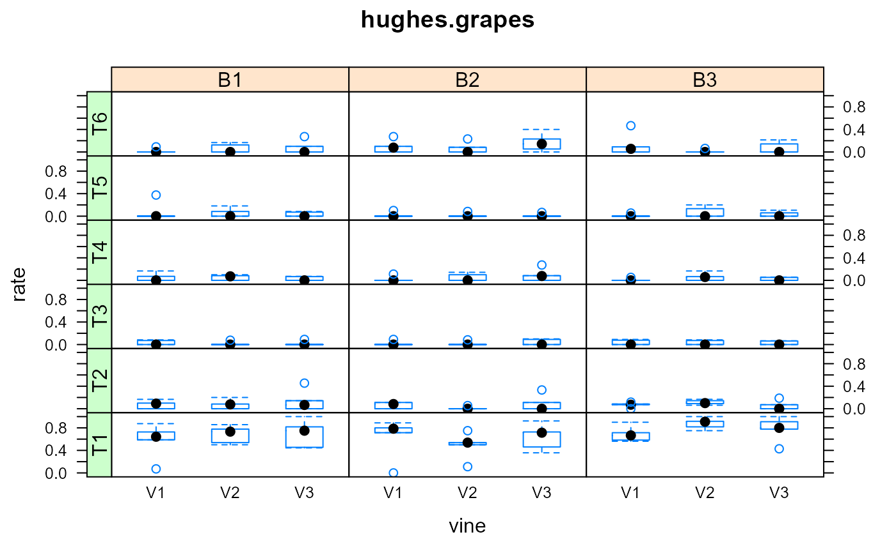

hughes.grapes.RdDisease incidence on grape leaves in RCB experiment with 6 different treatments.
A data frame with 270 observations on the following 6 variables.
blockBlock factor, 1-3
trtTreatment factor, 1-6
vineVine factor, 1-3
shootShoot factor, 1-5
diseasedNumber of diseased leaves per shoot
totalNumber of total leaves per shoot
These data come from a study of downy mildew on grapes. The experiment was conducted at Wooster, Ohio, on the experimental farm of the Ohio Agricultural Research and Development Center, Ohio State University.
There were 3 blocks with 6 treatments. Treatment 1 is the unsprayed control. On 30 Sep 1990, disease incidence was measured. For each plot, 5 randomly chosen shoots on each of the 3 vines were observed. The canopy was closed and shoots could be intertwined. On each shoot, the total number of leaves and the number of infected leaves were recorded.
Hughes, G. and Madden, LV. 1995. Some methods allowing for aggregated patterns of disease incidence in the analysis of data from designed experiments. Plant Pathology, 44, 927--943. http://doi.org/10.1111/j.1365-3059.1995.tb02651.x
Used with permission of Larry Madden.
Hans-Pieter Piepho. 1999. Analysing disease incidence data from designed experiments by generalized linear mixed models. Plant Pathology, 48, 668--684. http://doi.org/10.1046/j.1365-3059.1999.00383.x
library(agridat) data(hughes.grapes) dat <- hughes.grapes dat <- transform(dat, rate = diseased/total, plot=trt:block) # Trt 1 has higher rate, more variable, Trt 3 lower rate, less variable libs(lattice) foo <- bwplot(rate ~ vine|block*trt, dat, main="hughes.grapes", xlab="vine") libs(latticeExtra) useOuterStrips(foo)#> T1 T2 T3 T4 T5 T6 #> 0.67389080 0.07451458 0.02532236 0.04157511 0.03550864 0.07506862#> T1 T2 T3 T4 T5 T6 #> 1.0000000 0.4545455 0.1000000 0.2727273 0.3750000 0.4666667# Piepho model 3. Binomial data. May not be exactly the same model # Use the binomial count data with lme4 libs(lme4) m1 <- glmer(cbind(diseased, total-diseased) ~ trt + block + (1|plot/vine), data=dat, family=binomial)#>m1#> Generalized linear mixed model fit by maximum likelihood (Laplace #> Approximation) [glmerMod] #> Family: binomial ( logit ) #> Formula: cbind(diseased, total - diseased) ~ trt + block + (1 | plot/vine) #> Data: dat #> AIC BIC logLik deviance df.resid #> 750.1527 786.1369 -365.0763 730.1527 260 #> Random effects: #> Groups Name Std.Dev. #> vine:plot (Intercept) 2.335e-01 #> plot (Intercept) 1.693e-05 #> Number of obs: 270, groups: vine:plot, 54; plot, 18 #> Fixed Effects: #> (Intercept) trtT2 trtT3 trtT4 trtT5 trtT6 #> 0.65868 -3.24235 -4.31193 -3.88553 -4.05726 -3.25889 #> blockB2 blockB3 #> -0.09745 0.21429 #> convergence code 0; 1 optimizer warnings; 0 lme4 warnings#> #>#> #> #>#> #> #>bdat <- splitbin(cbind(diseased, total-diseased) ~ block+trt+plot+vine+shoot, data=dat)$tab names(bdat)[2] <- 'y' # Using lme4 m2 <- glmer(y ~ trt + block + (1|plot/vine), data=bdat, family=binomial)#>m2#> Generalized linear mixed model fit by maximum likelihood (Laplace #> Approximation) [glmerMod] #> Family: binomial ( logit ) #> Formula: y ~ trt + block + (1 | plot/vine) #> Data: bdat #> AIC BIC logLik deviance df.resid #> 1802.4155 1863.6065 -891.2077 1782.4155 3348 #> Random effects: #> Groups Name Std.Dev. #> vine:plot (Intercept) 2.335e-01 #> plot (Intercept) 2.337e-05 #> Number of obs: 3358, groups: vine:plot, 54; plot, 18 #> Fixed Effects: #> (Intercept) trtT2 trtT3 trtT4 trtT5 trtT6 #> 0.65870 -3.24234 -4.31194 -3.88552 -4.05723 -3.25895 #> blockB2 blockB3 #> -0.09749 0.21426 #> convergence code 0; 1 optimizer warnings; 0 lme4 warnings# Now using MASS:::glmmPQL libs(MASS) m3 <- glmmPQL(y ~ trt + block, data=bdat, random=~1|plot/vine, family=binomial)#>#>#>m3#> Linear mixed-effects model fit by maximum likelihood #> Data: bdat #> Log-likelihood: NA #> Fixed: y ~ trt + block #> (Intercept) trtT2 trtT3 trtT4 trtT5 trtT6 #> 0.65474283 -3.21865859 -4.28325379 -3.85830210 -4.02992042 -3.23565097 #> blockB2 blockB3 #> -0.09687143 0.21091878 #> #> Random effects: #> Formula: ~1 | plot #> (Intercept) #> StdDev: 0.0004264538 #> #> Formula: ~1 | vine %in% plot #> (Intercept) Residual #> StdDev: 0.2354825 0.9890316 #> #> Variance function: #> Structure: fixed weights #> Formula: ~invwt #> Number of Observations: 3358 #> Number of Groups: #> plot vine %in% plot #> 18 54